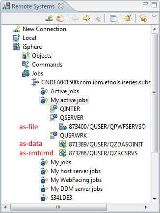
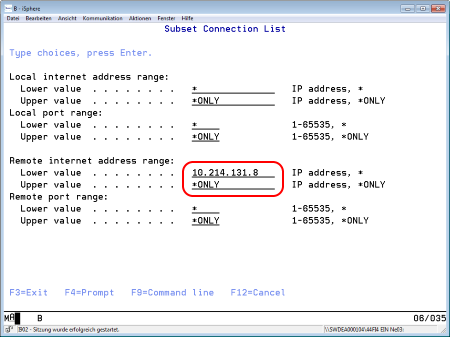
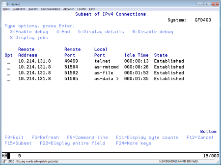

Sometimes it can be necessary to check the job logs of the RDi server jobs in order to find the answer for an existing problem. In this case there are two options:
Expand the Jobs subsystem and the My active jobs node:

The relevant jobs are listed below the QSERVER and QSYSWRK nodes. Use the iSphere Job Log Explorer to search the job logs for messages that could explain the problem.
| QPWFSERVSO | This program belongs to the *FILE server that is started with STRHOSTSVR SERVER(*FILE). The job is started when RDi establishs a connection to a host. Usually that job is not relevant for analyzing iSphere problems. | |
| QZRCSRVS | This program belongs to the *RMTCMD server that is started with STRHOSTSVR SERVER(*RMTCMD). The job is started when RDi establishs a connection to a host. Whenever iSphere executes a CL command or calls a program, this job is used. Look at this job when trying to solve a problem. | |
| QZDASOINIT | This program belongs to the *DATABASE server that is started with STRHOSTSVR SERVER(*DATABASE). The job is started when RDi or iSphere executes a JDBC statement. Look at this job when trying to solve a problem. |
You need to know the TCP/IP address of your PC client, when you want to use the NETSTAT command. Without that address it can be very difficult to find the relevant jobs. You can use the Retrieve Device Description (QDCRDEVD) API, format DEVD0600 to retrieve the TCP/IP address in dotted decimal form. Or you can use the WHOAMI command that is shipped with iSphere and which is available as an XML installation package in file QBUILD in the iSphere product library.
Now, figure out your TCP/IP address. Then execute the NETSTAT command and use option 3 to work with the IPv4 connection status. Use F15 to create a subset with the connections of your TCP/IP address.

The result is a nice and short list with your jobs:

Use option 8 to display the jobs of a given connection and then proceed with option 5 to work with a job. From there option 10 takes you to the job log.